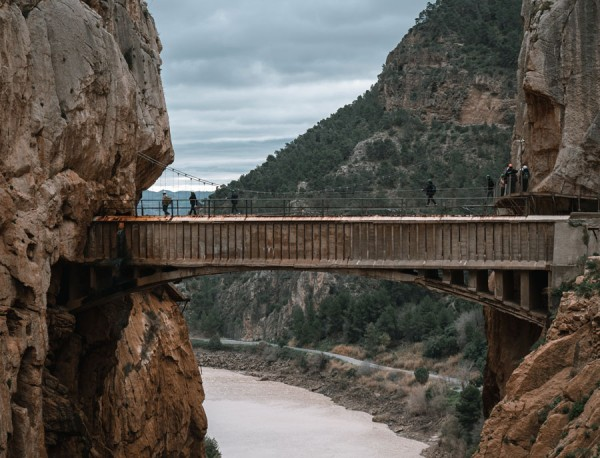

Actividad 2
Dale click y podrás escuchar sonidos de pájaros en la naturaleza.
Elementos naturales en un parque:

- Árboles
- Flores
- Aves
- Insectos
- Arbustos
Pasos para observar animales en un parque:
- Seleccionar un área tranquila
- Mantener el silencio
- Usar binoculares
- Identificar las especies observadas
- Tomar notas o fotos

Clasificación de animales en un parque:

- Animales
- Aves: Como palomas, gorriones y mirlos.
- Insectos: Como mariposas, abejas y escarabajos.
- Pequeños mamíferos: Como ardillas, erizos o ratones de campo.
- Plantas
- Árboles: Como robles, pinos o plátanos de sombra, que ofrecen frescura y sombra.
- Arbustos: Como rosales o adelfas, que decoran y delimitan espacios.
- Plantas herbáceas: Como margaritas, césped o lavanda, que llenan de color y aroma el entorno.
- Hongos
- Seta de chopo (Agrocybe aegerita): Crece cerca de árboles como álamos y chopos.
- Champiñón silvestre (Agaricus campestris): Suele aparecer en zonas de césped o praderas.
- Hongo yesquero (Fomes fomentarius): Crece en los troncos de árboles, especialmente en los que están dañados o caídos.
